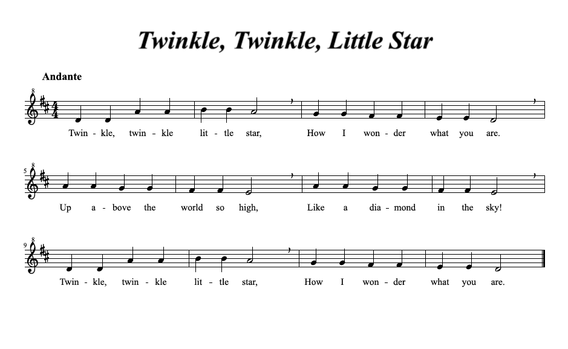

Video
Aufgaben
Aufgabe 1
1. Erstelle mit Hilfe von Snap! die gegebene Notenfolge:

2. Ändere den Rhythmus dieser Notenfolge beliebig ab. Beispielsweise kannst Du alle Achtelnoten als Viertelnoten spielen und umgekehrt.
3. Ändere einige Noten Deiner erstellten Notenfolge ab. Beispielsweise kannst Du die Note nun eine Oktave oder Terz höher spielen.
Aufgabe 2 - freiwillig
1. Erstelle die restlichen Takte von Twinkle Twinkle Little Star.
2. Ändere den Rhythmus des Liedes beliebig ab.
3. Ändere einige Noten Deiner erstellten Notenfolge wie in Aufgabe 1 ab.
